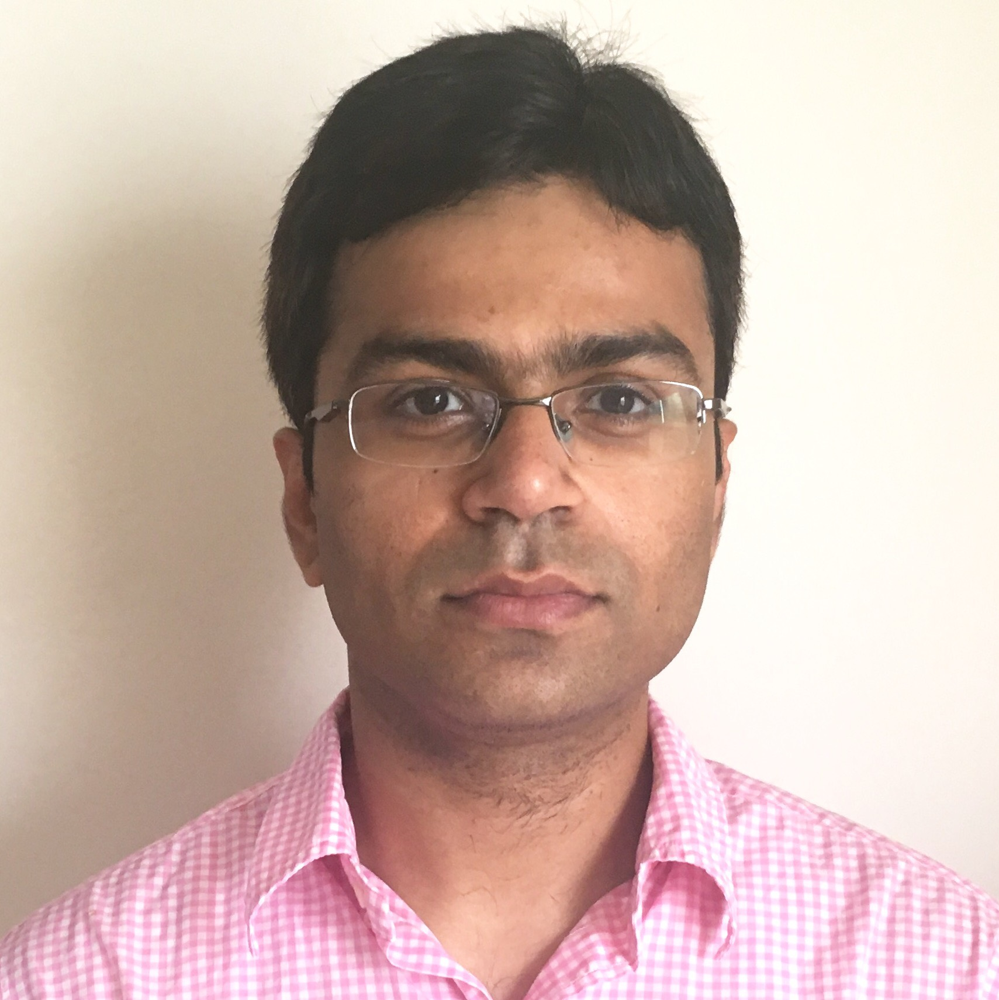

|  |
Abhigyan SharmaSenior Inventive Scientist, AT&T Labs Researchabhigyan@research.att.com |
I am a researcher at AT&T Labs Research in the CloudQos group. I completed my PhD in Computer Science at UMass Amherst under the fantastic supervision of Arun Venkataramani and Ramesh Sitaraman. My dissertation received the UMASS CS Outstanding PhD Dissertation Award 2016. I am currently working on cloud computing research related to Network Functions Virtualization.
Wei Zhang, Abhigyan Sharma, Kaustubh Joshi, Timothy Wood.
Towards an OS for the Network Data Plane.
SOSR 2017 Poster.
Abhigyan Sharma, Xiaozheng Tie, Hardeep Uppal, Arun Venkataramani, David
Westbrook, Aditya Yadav.
A Global Name Service For A Highly Mobile Internet.
SIGCOMM 2014. Talk
Abhigyan Sharma, Arun Venkataramani, Antonio A. A. Rocha.
Pros and Cons of Model-Based Bandwidth Control for Client-assisted
Content Delivery.
COMSNETS 2014.
Abhigyan Sharma, Arun Venkataramani, Ramesh Sitaraman.
Distributing Content Simplifies ISP Traffic Engineering.
SIGMETRICS 2013. Talk
Arun Venkataramani, Abhigyan Sharma, Xiaozheng Tie, David Westbrook,
Hardeep Uppal, Jim Kurose, Dipankar Raychaudhuri.
Design Guidelines for a Global Name Service for a Mobility-Centric,
Trustworthy Internetwork.
COMSNETS 2013 (Invited paper).
Abhigyan Sharma, Aditya Mishra, Vikas Kumar, Arun Venkataramani.
Beyond MLU: An Application Centric Comparison of Traffic Engineering
Schemes.
INFOCOM 2011. Talk
Abhigyan, Joydeep Chandra, Niloy Ganguly.
A Bandwidth-aware Topology Generation Mechanism for Peer-to-Peer based
Publish-Subscribe Systems.
ICIIS 2008.